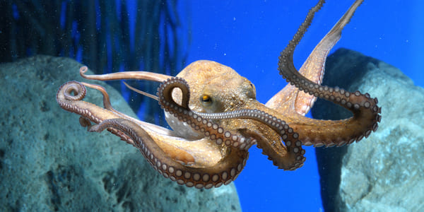

¿Alguna vez has deseado tener una mascota única y fascinante que traiga el encanto del océano a tu hogar? En la Tienda de Pulpos, te ofrecemos la oportunidad de hacer realidad ese sueño adoptando uno de nuestros adorables pulpos. Sumérgete en un mundo de maravillas acuáticas y descubre la magia de tener un pulpo como compañero. Con sus inteligentes ojos y tentáculos juguetones, estos fascinantes animales prometen cautivar tu corazón y llenar tu vida de alegría y asombro. En nuestra tienda, encontrarás una amplia variedad de especies de pulpos, cada una con su propia personalidad única y encanto especial. Desde el dulce Pulpo Pigmeo del Pacífico hasta el intrigante Pulpo de Anillos Azules, hay un compañero perfecto esperándote aquí.
Además de ofrecerte la oportunidad de adoptar un pulpo, también proporcionamos una selección de accesorios y suministros para garantizar el cuidado y la felicidad óptimos de tu nueva mascota. Desde juguetes interactivos hasta alimentos de calidad premium, tenemos todo lo que necesitas para brindarle a tu pulpo un hogar feliz y saludable. En la Tienda de Pulpos, nuestro objetivo es compartir el amor por estos increíbles animales marinos y ayudarte a crear un vínculo especial con tu nuevo amigo del mar. Únete a nosotros en esta emocionante aventura y descubre la maravilla de tener un pulpo como parte de tu vida. ¡Ven y adopta a tu pulpo hoy mismo!